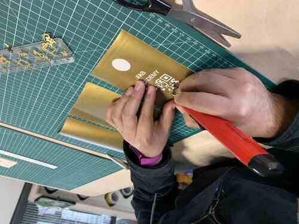
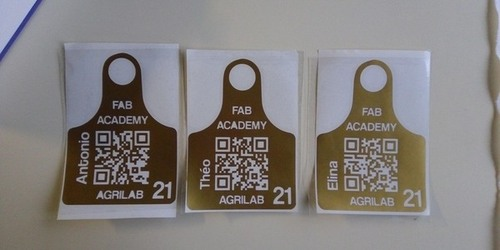
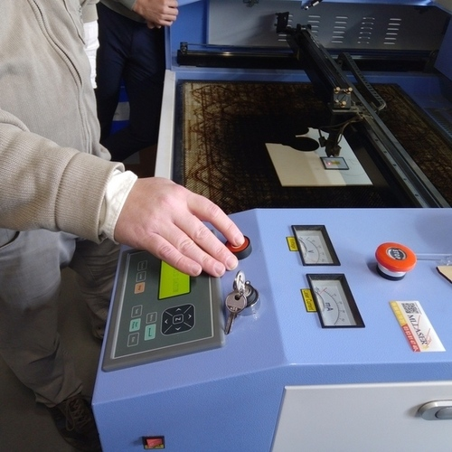
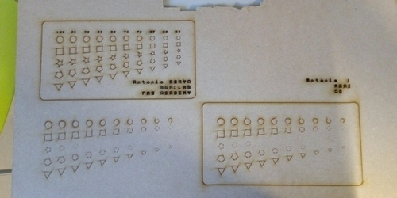
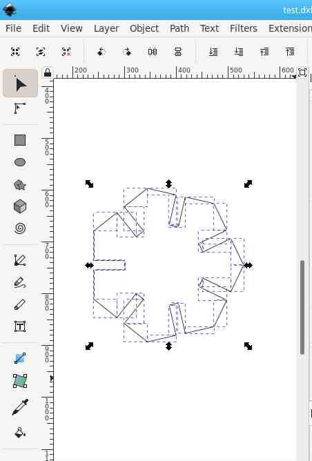

4. Computer controlled cutting¶
Introduction:¶
This week we’ve learned how to use different machines in the Fab Lab. We had a great experience while practicing vinyl and laser cutting. My approach was very simple but I’ve discovered interesting techniques and important information for the upcoming weeks.
This is the link to this weeks group assignment
Vinyl Cutting:¶
Machine¶
The machine I’ve used for this practice is the Silhouette Cameo version 3
Specifications¶
| Maximum cutting area | 12 in. x 24 in. (30.5 cm x 61 cm) with a cutting mat 12 in. x 10 ft. (30.5 cm x 3m) with a lined media |
| Maximum Media Thickness | 78.75 mils (2 mm) |
| Maximum Cutting Force | 210 gf |
| USB Port | For reading and cutting saved files directly |
| Compatible Media Types | Vinyl, heat transfer material, cardstock, photo paper, copy paper, rhinestone template material, fabric, and more |
| Interface | USB 2.0 high speed |
| Unit Dimensions | 22.5 in. x 6 in. x 8.5 in. (57.2 cm x 15.2 cm x 21.6 cm) |
| Unit Weight | 8 lbs 15 oz |
| Shipping Dimensions | 23.5 in. x 11 in. x 8.5 in. (59.7 cm x 28 cm x 21.6 cm) |
| Shipping Weight | 12 lbs 13 oz |
| Warranty | One year parts and labor |
Consumables¶
- Blades
- Vinyl rolls

- Vinyl for heat transfer
- Adhesive vinyl

Settings¶
- Material: Glossy vinyl
- Action: Cut
- Blade: Auto Blade
- Auto blade level: 1
- Speed: 5
- Force: 10
- Pass count: 1
Load material¶
- Select the material and place it on the roll tray of the machine.
- Align the material perpendiculary to the machine axis following the alignment guides.
- Using the machine interface select “Load material” option and accept to confirm.
- Check the correct placement of the material of the machine.
The auto-blade will adjust itself depending on the settings you have selected on the software, altough Silhouette Studio will give you predefined settings.
2D Design:¶
This is a simple design, it’s based on my earring 2D draft from the last assignment. And it’s a Qr code badge that redirects to my fab academy main page.
QR Codes get complex with more text on it, so the idea is to share my website from the fab academy program to anyone by scanning the “badge”. I used bit.ly to shorten my website URL and then I encoded it in QR.
I’ve created the QR code here, I know it’s possible to get rid of online tools and just make a QR code with Python, but I actually liked this service, the generator has almost every standard of visual encoders.

After that I used gimp to invert the colors of the QR, because I wanted a filled design. And right after I imported the QR in Inkscape and integrated it as shown. I’ve made one for each of my team mates as a gift. And this design is intended to serve for future AgriLab Fab Academy students. We’re going to place our stickers in our classroom.

Cut¶
I’ve used silhouette studio to raster all images, this is a special proprietary software for the vinyl cutter. It’s a very friendly and intuitive software.
There are some important parameters to ensure a well cut design. Like the tolerance and speed.
The process of cutting the vinyl is very quick and it only needs some basic adjustments in the machine:
- Select and adjust the plate according to the roll width.
- Ensure that the vinyl is cut in a square angle.
- Ensure that the vinyl roll is aligned following the guides of the machine.
- Ensure that nothing and obstacle for the output.
Cutting:
- Follow the driver and software install process:
- Install drivers, included with silhouette studio
- Connect the Silhouette Cameo 3 machine to your computer using the USB interface.
- Open the design file in the Silhouette Studio software, clicking the open option of the file menu in the top bar.
- Prior to sending the file prepare the file, if you are about to use a transfer process, be sure that you need to mirror or not the design, otherwise it will appear inverted after the process.

- Press the send file button in the top right corner.
- Select the material to use from the drop down list.
- Select your cut tool for me it was (auto-blade).
- Select this settings for vinyl (#settings)
- Follow the instructions to load the material
Settings:
- Force: Its the force applied to punch the material with the blade.
- Speed: The cut blade movement speeds.
- Passed: The number of passes through the cuts.
- Blade deep: The ammount of milimeters that the blade will cut into the material.
Notes about vinyl cut: I didn’t perform any tests I’ve used the predefined settings in silhoutte studio for vinyl mate.
Adhesive transfer vinyl:¶
This was a very fun process. I used the design I described in the 2D design part.

The peeling process was very difficult and it took me almost one hour to peel off the three stickers. The complexity was high because of the QR code.
One difference from the thermal transfer process is that we need to place the vinyl into another adhesive transfer film, that will help us to keep our design to place it in a polished surface preferably.

Heat transfer vinyl on fabric:¶
Same to the previous process I had to remove the unwanted parts of the design using the peeling tools. After that I’ve used the iron to transfer the vinyl to the fabric.
After transfering the design with the heat to the fabric, I had to peel the transfer plastic carefully.
For this process we used vinyl with a thermal transfer film, after cutting the design, I peeled the vinyl to get rid of the unwanted parts in the design.

It was a slow process because of the QR in my design. But after a while I got confident enough to make the process a bit faster.
While peeling the design the iron press machine was pre-heating in order to be ready to transfer our designs in a piece of fabric.
This design is different from the one of stickers.
Laser Cutting:¶
Security:¶
Security it’s a very important part of this practice, we had a couple of hours of theory to ensure we understand the dangers of a class 1 laser machine.
We understand that the process of cutting the material produces combustion so there are multiple things to help to keeo this under control.
- Keep a power/speed ratio according to the material.
- Use safe materials.
- Work under supervision of the instructors.
- Never open the lid while the machine is working.
- Never put you or something between the path of the mirrors of the machine.
- Identify the location of the extinguisher.
- Localize the emergency stop button.
- If possible use a wet fabric to extinguish small fires before use the extinguisher.
- Never look directly to the laser.
- Check the air extractor and liquid cooling systems, both should be working properly.
- Stay watching the process carefully, don’t turn back, because sometimes fires spread quickly.
- Keep a safe distance area.
- Be aware of the fumes.

Controller board, motor drivers and power supply.

That big bulb is the CO2 laser tube, that projects a ray of IR photons and makes the laser.

The emergency stop button is very important to avoid accidents and damage to the machine.
Software:¶

The software was the most frustrating experience for me this week. Sometimes I had to start all over my work because it just halts for any reason.
But I learnt to use it properly, the basic steps are:
- Load a design in dxf format.
- Separate the parts in layers.
- Configure each of the layers for engraving.
- Configure the last layer as the one that’s going to cut out your design.
Power and speed:¶
The ratio of output power of the laser and the speed of the movements of it are crucial to get the intended design.

I tried several times to understand and identify differences of the combination of speed and power. Sometimes the power was very low that it didn’t engrave anything and other it was too high.
I discovered also the importance of the “minimum speed” parameter, if the difference is too high with the highest the machine will not engrave or cut properly.

Kit:¶
I’ve made a parametric random shape generator with Python, the idea was simple, just to generate DXF files ready for the laser cutting software.

Python is a interpreted high-level programming language, its easy to use for coding and also I find it extremely fun.
I’ve coded this following the principle of shaping a polygon by rotating a point in the respective angle that depends of the number of sides of it.
Then to cut the slot I used the same principle mapping manually the points and then rotating it in the origin of the shape.
I had the idea to make a parametric polygon drafter script in Python as a personal challenge and the result was satisfactory thus, I didn’t had the chance on any other week to apply the same principle. It could be possible to use a python script like this to change the size of the body of the device for my final project.
Python code explained:¶
- Head with autor information:
'''
Autor: Antonio de Jesús Anaya Hernández
Github: @kny5
Program: Parametric polygon shape generator for laser cutting with kerf and dxf output.
'''
- Install EZDXF library for python on Fedora Linux OS:
pip install ezdxf
- Importing libraries used:
import math
import ezdxf
import random
- Parameters used, to change then just overwrite the value here:
- Sides could be random generated.
- Radius of the shape.
- Origin coordinates of the first shape.
- Depth of the joining cut of the shape.
- Kerf, this depends on the machine please check this for more information
# Parameters
sides = random.randrange(3, 10, 1)
radius = 40
origin = (100,100)
slot_depth = radius/2
kerf = 0.2
material_thickness = 5
- DXF_file class holds the functinos to create, save and add lines to build the shapes on the file.
class dxf_file():
def __init__(self, __filename):
self.filename = __filename
self.file = None
self.create_dxf()
def create_dxf(self):
self.file = ezdxf.new('R2018')
self.file.saveas(self.filename)
def save_dxf(self):
self.file.saveas(self.filename)
def add_vectors_dxf(self, vectors):
self.model = self.file.modelspace()
for vector in vectors:
self.model.add_line(vector[0], vector[1])
self.save_dxf()
- rotate_point its a function to rotate any point in 2D in a pivot point and angle specified. This function was used to roate multiple points like this:
def rotate_point(point, pivot, angle):
x = ((point[0] - pivot[0]) * math.cos(angle)) - ((point[1] - pivot[1]) * math.sin(angle)) + pivot[0]
y = ((point[0] - pivot[0]) * math.sin(angle)) + ((point[1] - pivot[1]) * math.cos(angle)) + pivot[1]
return (x, y)
- This function returns the intersection point of two lines (vectors) and was used to project lines to build the slots of the shapes.
def line_intersection(line1, line2):
xdiff = (line1[0][0] - line1[1][0], line2[0][0] - line2[1][0])
ydiff = (line1[0][1] - line1[1][1], line2[0][1] - line2[1][1])
def det(a, b):
return a[0] * b[1] - a[1] * b[0]
div = det(xdiff, ydiff)
if div == 0:
raise Exception('lines do not intersect')
d = (det(*line1), det(*line2))
x = det(d, xdiff) / div
y = det(d, ydiff) / div
return (x, y)
- This class is unused but was mean to optimized the arragement of the figures in the canvas of the DXF file.
class workspace():
def __init__(self, __origin=(0,0), __width=1000, __height=1000):
self.origin = __origin
self.width = __width
self.height = __height
self.objects = []
def add_object(self, __object):
self.objects.append(__object)
# Should I sort this?
- This polygon class holds the properties of all the figures to cut on init the properties are defined, so as the process after creating a new instance of the class.
- Make produces a figure with specified sides and radius.
- Get vectors get the vectors of the figure to later write it to a DXF file using the dxf_file class.
- Slot produces the cuts (slots) for the ensemble of the figures.
class polygon():
def __init__(self, __origin, __sides, __radius, __kerf=kerf):
self.kerf = __kerf
self.sides = __sides
# kerf parameter
self.radius = __radius + self.kerf
self.origin = __origin
self.points = []
self.vectors = []
self.angle = 360/self.sides
self.make()
self.get_vectors()
def make(self):
for side in range(0, self.sides):
__x = self.origin[0] + self.radius * math.cos(2 * math.pi * side / self.sides)
__y = self.origin[1] + self.radius * math.sin(2 * math.pi * side / self.sides)
self.points.append((__x, __y))
def get_vectors(self):
self.vectors = list(zip(self.points, self.points[1:] + self.points[:1]))
def slot(self, __width, __depth):
# kerf parameter
width = __width - self.kerf
depth = __depth - self.kerf
# Define points of slot shape:
__a = (self.origin[0] + self.radius - depth, self.origin[1] - (width / 2))
__b = (self.origin[0] + self.radius - depth, self.origin[1] + (width / 2))
__c = (self.origin[0] + self.radius, self.origin[1] + (width / 2))
__d = (self.origin[0] + self.radius, self.origin[1] - (width / 2))
# Set initial position rotate to initial position
__a = rotate_point(__a, self.origin, math.radians(self.angle / 2))
__b = rotate_point(__b, self.origin, math.radians(self.angle / 2))
__c = rotate_point(__c, self.origin, math.radians(self.angle / 2))
__d = rotate_point(__d, self.origin, math.radians(self.angle / 2))
# packing slot sides
slot_left_side_1 = (__b, __c)
slot_right_side_1 = (__a, __d)
# finding intersection point between slot sides and polygon face 1
right_inter = line_intersection(self.vectors[0], slot_right_side_1)
left_inter = line_intersection(self.vectors[0], slot_left_side_1)
# Manually ordering the points of the slot shape
output = [self.points[0]]
output.append(right_inter)
output.append(__a)
output.append(__a)
output.append(__b)
output.append(__b)
output.append(left_inter)
# index 7
# repeating the process radially for the number of faces.
for side in range(1, self.sides):
output.append(rotate_point(self.points[0], self.origin, math.radians(side * self.angle)))
output.append(rotate_point(right_inter, self.origin, math.radians(side * self.angle)))
output.append(rotate_point(__a, self.origin, math.radians(side *self.angle)))
output.append(rotate_point(__a, self.origin, math.radians(side *self.angle)))
output.append(rotate_point(__b, self.origin, math.radians(side *self.angle)))
output.append(rotate_point(__b, self.origin, math.radians(side *self.angle)))
output.append(rotate_point(left_inter, self.origin, math.radians(side * self.angle)))
# creating a vector list from the points list
self.output = list(zip(output, output[1:] + output[:1]))
- This lines are ment to create the instances of the polygon class, dxf_file and produce a DXF file as output.

# program test
# creating a random generated polygon
a = polygon(origin, sides, radius)
a.slot(material_thickness, slot_depth)
# creating a DXF document and adding slot output vectors
dxf_file_ = dxf_file("test.dxf")
a.get_vectors()
dxf_file_.add_vectors_dxf(a.output)
Python program usage demo¶
In this video I show the usage of the script under a Linux system using the command line to execute the script and produce the DXf output file.
Advantages and disadvantages¶
The simplicity of the script allows to make further changes, thus scripting its far more complex than using a CAD software, except for OpenScad that follows the principle of my idea, I would like to say that I should stick to openscad as its more powerful and easy to distribute than a python script.
Laser cutting:¶
This process was really easy, the parameters I used in the Python program were:
- Kerf = 0.25
- Material thinkness = 4.98
- Sides = 8 # Can be individually set, but I used the global variable for every polygon.
For the laser cutter:
- Speed = 80
- Power = 30 %
I’ve made two DXF whit 4 Octagons and a third one with 6. I didn’t have enough time to add a nesting algoritm and a chamfer algorithm.
But I liked the simplicity of the program.
First try and perfect!
I was able to make different shapes with it.
Files¶
Note: You need Python > 3.7 to install the ezdxf library with the following command using pip:
pip install ezdxf
Download Python program latest version